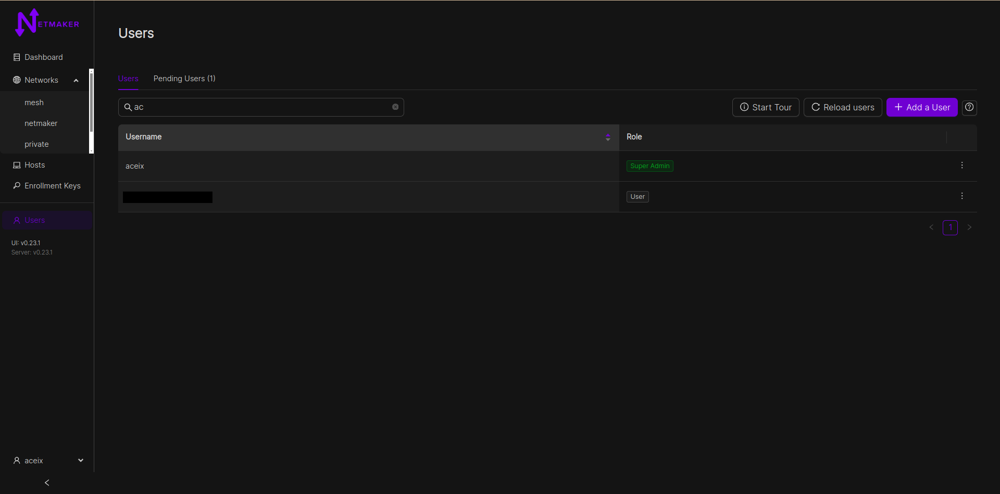
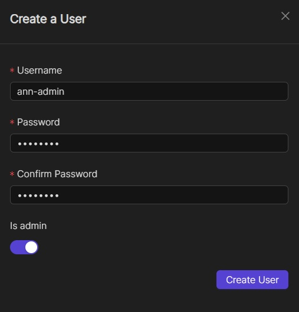

User Management¶
Creating a Super Admin Account¶
When you start Netmaker for the first time, you will be prompted to create a superadmin account from the UI like below. Input your username and a super memorable but strong password, then click on the Sign up button to create a superadmin account.

Once done, you can now login to your Netmaker server and create additional users.

Integrating OAuth¶
Introduction¶
As of v0.14.5, Netmaker offers integration with the following OAuth providers:
GitHub
Google
Microsoft Azure AD
Open ID Connect (OIDC)
By integrating with an OAuth provider, your Netmaker users can log in via the provider, rather than the default simple auth.
Configuring your provider¶
In order to use OAuth, configure your OAuth provider (GitHub, Google, Azure AD).
You must configure your provider (except for Azure AD) to use the Netmaker Dashboard URI dashboard.<netmaker.base.domain> as the origin URL.
For example: https://dashboard.netmaker.mydomain.com
You must configure your provider to use the Netmaker API URI redirect route with the following format: https://api.<netmaker base domain>/api/oauth/callback.
For example: https://api.netmaker.mydomain.com/api/oauth/callback
General provider instructions can be found with the following links:
Instructions for GitHub: https://oauth2-proxy.github.io/oauth2-proxy/docs/configuration/oauth_provider/#github-auth-provider Instructions for Google: https://oauth2-proxy.github.io/oauth2-proxy/docs/configuration/oauth_provider/#google-auth-provider Instructions for Microsoft Azure AD: https://oauth2-proxy.github.io/oauth2-proxy/docs/configuration/oauth_provider/#microsoft-azure-ad-provider Instructions for OIDC: https://oauth2-proxy.github.io/oauth2-proxy/docs/configuration/oauth_provider/#openid-connect-provider
Configuring Netmaker¶
After you have configured your OAuth provider, take note of the CLIENT_ID and CLIENT_SECRET. If you are using Azure for oauth, you may also want to note down the Azure tenant ID you wish to use.
Next, Configure Netmaker with the following environment variables. If any are left blank, OAuth will fail.
AUTH_PROVIDER: "<azure-ad|github|google|oidc>"
CLIENT_ID: "<client id of your oauth provider>"
CLIENT_SECRET: "<client secret of your oauth provider>"
SERVER_HTTP_HOST: "api.<netmaker base domain>"
FRONTEND_URL: "https://dashboard.<netmaker base domain>"
AZURE_TENANT: "<only for azure, you may optionally specify the tenant for the OAuth>"
OIDC_ISSUER: "<only for oidc, your issuer endpoint for OIDC ie. http://127.0.0.1:5556/dex"
After restarting your server, the Netmaker logs will indicate if the OAuth provider was successfully initialized:
sudo docker logs netmaker
Once successful, users can click the key symbol on the login page to sign-in with your configured OAuth provider.

test
Users in Netmaker Professional¶
Netmaker Professional offers advanced user management features. The super admin can create users with either a user or admin role. Only Admins can access the dashboard, the normal users can use remote access client to join the network through a gateway. Admins can add users and assign them to remote access gateways, which includes managing the user’s access to different remote access gateways.
Here is a breakdown of the different user types and their permissions:
User: Users do not have access to the Netmaker dashboard. They can only use the remote access client to connect to a gateway.
Admin: They can create and manage users, networks, and gateways. They cannot create/manage other admins
Super Admin: Super admins have full access to Netmaker. They can create and manage users, admins, networks, and gateways. They can also manage user and admin permissions.
Adding users¶
To add a user, go to the Users section and click the Add User button. Fill in the user’s details, including their name, password, and role.
As a super admin, you can add users with the role of admin or user.
As an admin, you can only add users with the role of user.

The credentials will need to be shared with the added user.
Configuring User Permissions¶
User management is done through the Netmaker dashboard, under the Users (or Manage Account, for SaaS) section from the left navigation bar. Only server admins have access to this section and can promote users to admin status. The superadmin/tenant owner can both promote and demote users to admin status.
{kind=link}
Normal users do not have access to the dashboard and are recommended to use our Remote Access Client to connect to the network. An admin must aforehand grant such users permission to certain networks by assigning them to remote access gateways however. View the “Remote Access” section for more information on this.
User creation¶
To create a new user, click the “Add a User” button on the Users page. Fill in the user’s details and click “Create User”.
Oauth Users¶
Users are also allowed to join a Netmaker server via OAuth. They can do this by clicking the “Login with SSO” button on the dashboard’s login page.

From v0.23.1, new accounts would be added to a pending list and would require approval from an admin before they can access any resource. This version also allows whielisting of email domains for OAuth users. Server admins can do that by adding a comma-separated list of domains to the ALLOWED_EMAIL_DOMAINS environment variable. eg: ALLOWED_EMAIL_DOMAINS=example.net,example.com
testing
NMCTL¶
NMCTL is a CLI tool for interacting with the Netmaker API.
Start with getting the latest nmctl binary specific to your operating system from the link below:
https://github.com/gravitl/netmaker/releases/latest
Make sure the binary is executable with chmod +x nmctl and then move it into your /usr/sbin folder.
If everything is setup ok, you should be able to type nmctl and see the following:
CLI for interacting with Netmaker Server
Usage:
nmctl [command]
Available Commands:
acl Manage Access Control Lists (ACLs)
completion Generate the autocompletion script for the specified shell
context Manage various netmaker server configurations
dns Manage DNS entries associated with a network
enrollment_key Manage Enrollment Keys
ext_client Manage Remote Access Clients
help Help about any command
host Manage hosts
logs Retrieve server logs
metrics Fetch metrics of nodes/networks
network Manage Netmaker Networks
network_user Manage Network Users
node Manage nodes associated with a network
server Get netmaker server information
user Manage users and permissions
usergroup Manage User Groups
Flags:
-h, --help help for nmctl
Use "nmctl [command] --help" for more information about a command.
Your CLI should be ready to go at this point.
Context¶
Before running any commands, a context has to be set which stores the API endpoint information. This allows the CLI to know which server to communicate with, and the user account to use.
NMCLI supports connecting to both standalone (self-hosted) and SaaS(managed) tenants. This is specified with a flag. More details below.
Connecting to standalone (self-hosted) tenants¶
Assuming your tenant is hosted at https://api.netmaker.example.com
You can use your username and password that you use to sign in to the dashboard UI to set the context. Then you can set the CLI to use that context.
nmctl context set <context name> --endpoint=https://api.netmaker.example.com --username=<username> --password=<password> # create the context
nmctl context use <context name> # apply the created context
You can also authenticate via OAuth with the following:
nmctl context set <context name> --endpoint=https://api.netmaker.example.com --sso # create the context for OAuth (Social Sign On)
nmctl context use <context name> # apply the created context
Connecting to SaaS (managed) tenants¶
You can also authenticate with a managed (SaaS) tenant with the following commands:
nmctl context set <context name> --saas --tenant_id=<tenant ID> --username=<username> --password=<password> # create the context
nmctl context use <context name> # apply the created context
You can also authenticate via OAuth with the following:
nmctl context set <context name> --saas --sso --tenant_id=<tenant ID> # create the context for OAuth (Social Sign On)
nmctl context use <context name> # apply the created context
List and switch between contexts¶
You can see a list of all your contexts that you have created with the following:
nmctl context list
That list also tells you what context/tenant is currently selected.
You can switch to a different context by using the use subcommand:
nmctl context use <context name>
Delete contexts¶
You can delete a context with the following:
nmctl context delete <context name>
Network¶
Create a network with the name test_net and CIDR 10.11.13.0/24.
nmctl network create --name="test_net" --ipv4_addr="10.11.13.0/24"
Fetch details of the created network.
nmctl network list
+----------+----------------------+----------------------+---------------------------+---------------------------+
| NETID | ADDRESS RANGE (IPV4) | ADDRESS RANGE (IPV6) | NETWORK LAST MODIFIED | NODES LAST MODIFIED |
+----------+----------------------+----------------------+---------------------------+---------------------------+
| test_net | 10.11.13.0/24 | | 2022-12-14T13:08:47+05:30 | 2022-12-14T13:08:47+05:30 |
+----------+----------------------+----------------------+---------------------------+---------------------------+
Access Key¶
Create an access key for the created network with 100 uses. This key shall be used by nodes to join the network test_net.
nmctl keys create test_net 100
{
"name": "key-818a4ac3fe85a9d0",
"value": "f0edf9ef08fa2b1a",
"accessstring": "eyJhcZljb25uc3RyaW5nIjoiYXBpLm5ldG1ha2VyLmV6ZmxvLmluOjQ0MyIsIm5ldHdvcmsiOiJ0ZXN0X25ldCIsImtleSI6ImYwZWRmOWVmMDhmYTJiMWEiLCJsb2NhbHJhbmdlIjoiIn0=",
"uses": 100,
"expiration": null
}
Nodes¶
Connect a node to the network using netclient and the access key created above. Use the accessstring as token.
netclient join -t <token>
List all nodes. This displays information about each node such as the address assigned, id, name etc
nmctl node list
+--------------+---------------------------+---------+----------+--------+-----------------------+-------+--------------------------------------+
| NAME | ADDRESSES | VERSION | NETWORK | EGRESS | REMOTE ACCESS GATEWAY | RELAY | ID |
+--------------+---------------------------+---------+----------+--------+-----------------------+-------+--------------------------------------+
| test_node | 10.11.13.254 | v0.17.0 | test_net | no | no | no | 938d7861-55fc-40a9-970d-6d70acfc3a80 |
+--------------+---------------------------+---------+----------+--------+-----------------------+-------+--------------------------------------+
Using nmctl, we can turn the node into egress, remote access gateway or a relay. Lets turn the node into an remote access gateway by supplying the network name and node id as parameters.
nmctl node create_remote_access_gateway test_net 938d7861-55fc-40a9-970d-6d70acfc3a80
Fetching the node list once again we can see that our node has been turned into a remote access gateway.
nmctl node list
+--------------+---------------------------+---------+----------+--------+-----------------------+-------+--------------------------------------+
| NAME | ADDRESSES | VERSION | NETWORK | EGRESS | REMOTE ACCESS GATEWAY | RELAY | ID |
+--------------+---------------------------+---------+----------+--------+-----------------------+-------+--------------------------------------+
| test_node | 10.11.13.254 | v0.17.0 | test_net | no | yes | no | 938d7861-55fc-40a9-970d-6d70acfc3a80 |
+--------------+---------------------------+---------+----------+--------+-----------------------+-------+--------------------------------------+
Remote Access Clients¶
Adding a Remote Access Client to the network is just as easy. Requires the network name and node id as input parameters.
nmctl ext_client create test_net 938d7861-55fc-40a9-970d-6d70acfc3a80
Success
List all available Remote Access Clients.
nmctl ext_client list
+--------------+---------+--------------+--------------+---------+-------------------------------+
| CLIENT ID | NETWORK | IPV4 ADDRESS | IPV6 ADDRESS | ENABLED | LAST MODIFIED |
+--------------+---------+--------------+--------------+---------+-------------------------------+
| limp-chicken |test_net | 10.11.13.2 | | true | 2022-11-23 18:28:57 +0530 IST |
+--------------+---------+--------------+--------------+---------+-------------------------------+
The wireguard config of an Remote Access Client can also be fetched with the network name and client id.
nmctl ext_client config test_net limp-chicken
[Interface]
Address = 10.11.13.2/32
PrivateKey = 4Ojhsn/uLcH6xta6zqokQ+GiRuZwesdzE2hDSa6vYWc=
MTU = 1280
[Peer]
PublicKey = h96G9R8qqHIm6OfFgIZNBlRE5uCumkSZv4Pwn2DVXEs=
AllowedIPs = 10.11.13.0/24
Endpoint = 138.209.145.214:51824
PersistentKeepalive = 20
ACLs¶
Access Control between hosts can be managed via the NMCTL CLI. These settings allow the network admin to specify which hosts are allowed to communicate between each other.
List¶
To list all access control settings for a network:
nmctl acl list <network>
Allow/Deny¶
To allow communication between two hosts on a network:
nmctl acl allow <network> <host 1 ID> <host 2 ID>
To deny communication between two hosts:
nmctl acl deny <network> <host 1 ID> <host 2 ID>
Host IDs can be retrieved with the nmctl node list command.
The global –output flag can be used to format how a network’s ACLs are outputted.
Help¶
Further information about any subcommand is available using the –help flag
nmctl subcommand --help
Example:-
nmctl node --help
Manage nodes associated with a network
Usage:
nmctl node [command]
Available Commands:
create_egress Turn a Node into a Egress
create_remote_access_gateway Turn a Node into a Remote Access Gateway
create_relay Turn a Node into a Relay
delete Delete a Node
delete_egress Delete Egress role from a Node
delete_remote_access_gateway Delete Remote Access Gateway role from a Node
delete_relay Delete Relay role from a Node
get Get a node by ID
list List all nodes
uncordon Get a node by ID
update Update a Node
Flags:
-h, --help help for node
Use "nmctl node [command] --help" for more information about a command.
testing2
or visit https://gravitl.com/plans.
Telemetry¶
As of v0.10.0, Netmaker collects “opt-out” telemetry data. To opt out, simply set “TELEMETRY=off” in your netmaker.env file.
Please consider participating in telemetry, as it helps us focus on the features and bug fixes that are most useful to users. Netmaker is a broad platform, and without this data, it is difficult to know where the team should spend its limited resources.
The following is the full list of telemetry data we collect. Besides “Server Version” all data is simply an integer count:
Randomized server ID
Count of nodes
Count of “non-server” nodes
Count of Remote Access Clients
Count of networks
Count of users
Count of linux nodes
Count of freebsd nodes
Count of macos nodes
Count of windows nodes
Count of docker nodes
Count of k8s nodes
Server version
We use PostHog, an open source and trusted framework for telemetry data.
To look at exactly we collect telemetry, you can view the source code under serverctl/telemetry.go: https://github.com/gravitl/netmaker/blob/master/serverctl/telemetry.go
testing3
You can download the latest version of RAC from the Netmaker file server:
https://fileserver.netmaker.org/releases/download/<version>
Search for remote client and download the appropriate version for your operating system.
For Linux (Debian/Ubuntu), you can also use the following command to download the latest version:
curl -sL 'https://apt.netmaker.org/remote-client/gpg.key' | sudo tee /etc/apt/trusted.gpg.d/remote-client.asc
curl -sL 'https://apt.netmaker.org/remote-client/debian.deb.txt' | sudo tee /etc/apt/sources.list.d/remote-client.list
sudo apt update
sudo apt search remote-client # to see available versions
sudo apt install remote-client
Red Hat Distros (Fedora/RedHat/CentOSRocky)
curl -sL 'https://rpm.netmaker.org/remote-client/gpg.key' | sudo tee /tmp/gpg.key
curl -sL 'https://rpm.netmaker.org/remote-client/remote-client-repo' | sudo tee /etc/yum.repos.d/remote-client.repo
sudo rpm --import /tmp/gpg.key
sudo dnf check-update
sudo dnf install remote-client
Following the above instructions, you can run RAC from your Linux desktop environment launcher or from the command line using the remote-client command.
For Mac, You can download the mac installer from the fileserver link above and run it. Because the app needs to be run as root, open a teminal and enter the command sudo /Applications/NetmakerRemoteClient.app/Contents/MacOS/remote-client.
For Windows, you can download the remote-access-client_86.msi installer and run it to install on your windows machine. The app will need to be run as administrator. Right click on the desktop icon after installation and click on run as administrator.